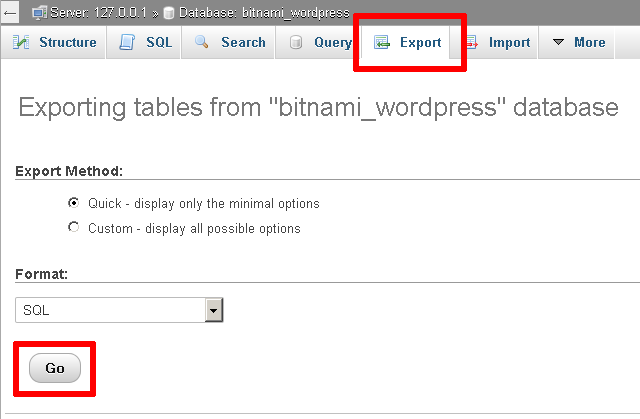
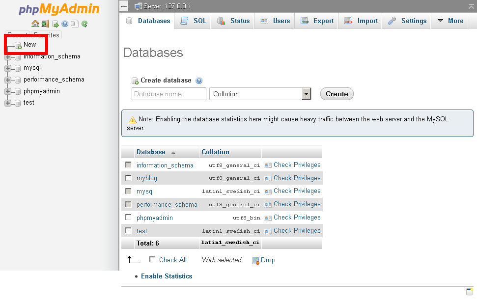
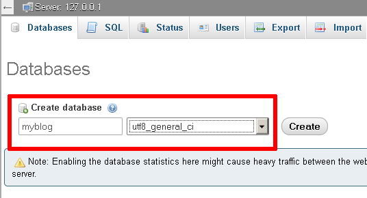
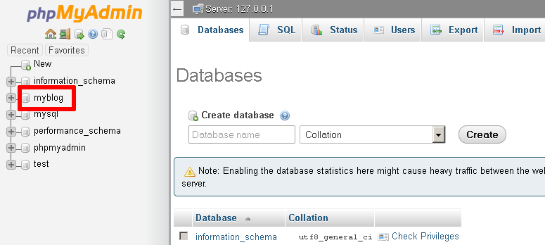
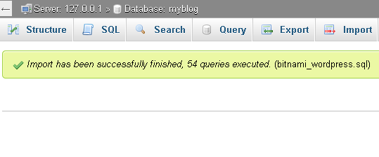

Backup and Restore MySQL Databases
XAMPP includes phpMyAdmin, an open-source, browser-based tool for managing MySQL database servers. This guide walks you through the process of backing up and restoring a MySQL database using phpMyAdmin.
This guide assumes that you already have a PHP application that uses a MySQL database deployed on XAMPP. The example application used in this guide is WordPress, although the steps outlined below will work for any application.
|
Tip
|
Remember that you can install WordPress quickly using the Bitnami WordPress module for XAMPP. |
To backup a MySQL database using phpMyAdmin, follow these steps:
-
Browse to http://localhost/phpMyAdmin or http://127.0.0.1/phpMyAdmin. If required, log in using your database access credentials. On a fresh XAMPP installation without any changes, you can log in as root with a blank password.
-
Select the database to be backed up from the list in the left navigation pane. In this case, we’re backing up the WordPress database, which is named bitnami_wordpress.

-
Select the "Export" command in the top navigation bar.
-
On the resulting page, select "Quick" as the export method and "SQL" as the output format. Click "Go" to proceed.

phpMyAdmin will export the database to a text file as a series of SQL statements. Once done, the browser will prompt you to download it to the desktop. This text file is your backup, so store it safely!
At a later point, you may wish to restore the database. To restore the data to a fresh MySQL database using phpMyAdmin, follow these steps:
-
Browse to http://localhost/phpMyAdmin or http://127.0.0.1/phpMyAdmin. If required, log in using your database access credentials.
-
Select the "New" command in the left navigation pane.
 -
On the resulting page, enter a name for the new database (in this case, myblog). Select the collation "utf8_general_ci". Click "Create" to create the database.
Once the database has been created, it will appear in the left navigation pane.
 -
Select the new database from the left navigation pane. In the resulting page, select the "Import" command in the top navigation bar.
-
Click the "Browse…" button and select the backup file created earlier. Click "Go" to proceed.

phpMyAdmin will import the data from the backup file. Once complete, you will see a screen indicating the status of the import.

If you browse the contents of the database, you should now see your original data.
You should now update your application’s configuration and point it to your newly-created database. For example, with the Bitnami WordPress module, you will need to edit the wp-config.php file in the apps\wordpress\htdocs\ subdirectory of your XAMPP installation directory. Within this file, you will need to update the DB_NAME constant to use the new database name.

|
Note
|
By default, PHP (and therefore phpMyAdmin) is configured to only accept uploads up to 2 MB in size. If your database is larger than this, you need to modify the PHP configuration file to accept a larger upload size. To do this, edit the php.ini file in the php\ subdirectory of your XAMPP installation directory and increase the values of the post_max_size and upload_max_filesize variables. Save your changes and restart Apache for the changes to take effect. |